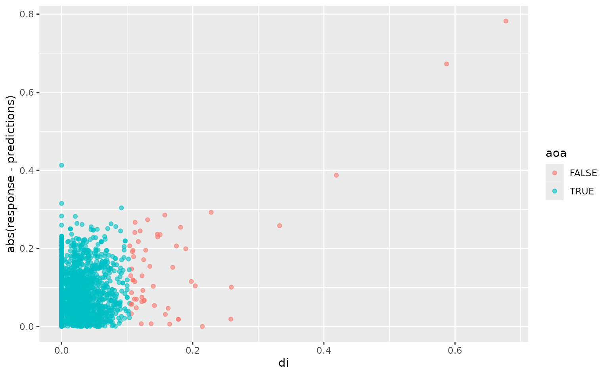

The waywiser package aims to be an ergonomic toolbox providing a consistent user interface for assessing spatial models. To that end, waywiser does three main things:
- Provides new yardstick extensions, making it easier to use performance metrics from the spatial modeling literature via a standardized API.
- Provides a new function,
ww_multi_scale(), which makes it easy to see how model performance metrics change when predictions are aggregated to various scales. - Provides an implementation of the area of applicability from Meyer and Pebesma 2021, extending this tool to work with tidymodels infrastructure.
This vignette will walk through each of these goals in turn. Before we do that, let’s set up the data we’ll use in examples. We’ll be using simulated data based on Worldclim variables; our predictors here represent temperature and precipitation values at sampled locations, while, our response represents a virtual species distribution:
library(waywiser)
set.seed(1107)
worldclim_training <- sample(nrow(worldclim_simulation) * 0.8)
worldclim_testing <- worldclim_simulation[-worldclim_training, ]
worldclim_training <- worldclim_simulation[worldclim_training, ]
worldclim_model <- lm(
response ~ bio2 + bio10 + bio13 + bio19,
worldclim_training
)
worldclim_testing$predictions <- predict(
worldclim_model,
worldclim_testing
)
head(worldclim_testing)
#> Simple feature collection with 6 features and 6 fields
#> Geometry type: POINT
#> Dimension: XY
#> Bounding box: xmin: -156.2436 ymin: 3.924933 xmax: 52.85843 ymax: 48.72934
#> Geodetic CRS: +proj=longlat +datum=WGS84 +no_defs
#> bio2 bio10 bio13 bio19 geometry response predictions
#> 8001 150 256 12 32 POINT (36.1216 30.23658) 0.65981755 0.60203146
#> 8002 85 248 82 196 POINT (-156.2436 19.73569) 0.30859908 0.30053636
#> 8003 178 275 56 33 POINT (-103.2796 31.85488) 0.47365646 0.65660673
#> 8004 100 200 74 99 POINT (20.64971 47.14207) 0.47266462 0.39658926
#> 8005 68 262 296 746 POINT (-81.33804 3.924933) 0.00863417 -0.01075431
#> 8006 112 241 21 48 POINT (52.85843 48.72934) 0.63255439 0.46702575Yardstick Extensions
First and foremost, waywiser provides a host of new yardstick metrics to provide a standardized interface for various performance metrics.
All of these functions work more or less the same way: you provide your data, the names of your “true” values and predicted values, and get back a standardized output format. As usual with yardstick, that output can either be a tibble or a vector output. For instance, if we want to calculate the agreement coefficient from Ji and Gallo 2006:
ww_agreement_coefficient(
worldclim_testing,
truth = response,
estimate = predictions
)
#> # A tibble: 1 × 3
#> .metric .estimator .estimate
#> <chr> <chr> <dbl>
#> 1 agreement_coefficient standard 0.675
ww_agreement_coefficient_vec(
truth = worldclim_testing$response,
estimate = worldclim_testing$predictions
)
#> [1] 0.6753398Some of these additional metrics are implemented by wrapping functions from the spdep package:
ww_global_geary_c(
worldclim_testing,
truth = response,
estimate = predictions
)
#> # A tibble: 1 × 3
#> .metric .estimator .estimate
#> <chr> <chr> <dbl>
#> 1 global_geary_c standard 0.166These functions rely on calculating the spatial neighbors of each observation. The waywiser package will automatically use ww_build_weights() to calculate these, if not provided, but this is often not desirable. For that reason, these functions all have a wt argument, which can take either pre-calculated weights or a function that will create spatial weights:
ww_global_geary_c(
worldclim_testing,
truth = response,
estimate = predictions,
wt = ww_build_weights(worldclim_testing)
)
#> # A tibble: 1 × 3
#> .metric .estimator .estimate
#> <chr> <chr> <dbl>
#> 1 global_geary_c standard 0.166
ww_global_geary_c(
worldclim_testing,
truth = response,
estimate = predictions,
wt = ww_build_weights
)
#> # A tibble: 1 × 3
#> .metric .estimator .estimate
#> <chr> <chr> <dbl>
#> 1 global_geary_c standard 0.166Because these are yardstick metrics, they can be used with yardstick::metric_set() and other tidymodels infrastructure:
yardstick::metric_set(
ww_agreement_coefficient,
ww_global_geary_c
)(worldclim_testing,
truth = response,
estimate = predictions)
#> # A tibble: 2 × 3
#> .metric .estimator .estimate
#> <chr> <chr> <dbl>
#> 1 agreement_coefficient standard 0.675
#> 2 global_geary_c standard 0.166Multi-scale model assessment
A common pattern with spatial models is that you need to predict observation units – pixels of a raster or individual points – which will be aggregated to arbitrary scales, such as towns or parcel boundaries. Because errors can be spatially distributed, or can either compound or counteract each other when aggregated, some assessment protocols recommend assessing model predictions aggregated to multiple scales.
The ww_multi_scale() function helps automate this process. The interface for this function works similarly to that for yardstick metrics – you provide your data, your true values, and your estimate – except you also must provide instructions for how to aggregate your data. You can do this by passing arguments that will be used by sf::st_make_grid(); for instance, we can use the n argument to control how many polygons our grid has in the x and y directions.
Note that each element of argument vector is used to make a separate grid – so, for instance, passing n = c(2, 4) will result in one 2-by-2 grid and one 4-by-4 grid, because n[[1]] is 2 and n[[2]] is 4. If we actually wanted to create a 2-by-4 grid, by passing sf::st_make_grid() the argument n = c(2, 4), we need to wrap that vector in a list so that running n[[1]] returns c(2, 4):
ww_multi_scale(
worldclim_testing,
truth = response,
estimate = predictions,
metrics = list(ww_agreement_coefficient, yardstick::rmse),
n = list(c(2, 4))
)
#> # A tibble: 2 × 6
#> .metric .estimator .estimate .grid_args .grid .notes
#> <chr> <chr> <dbl> <list> <list> <list>
#> 1 agreement_coefficient standard 0.202 <tibble [1 × 1]> <sf> <tibble>
#> 2 rmse standard 0.0391 <tibble [1 × 1]> <sf> <tibble>You can also pass polygons directly, if you have pre-defined grids you’d like to use:
grid <- sf::st_make_grid(worldclim_testing, n = c(2, 4))
ww_multi_scale(
worldclim_testing,
truth = response,
estimate = predictions,
metrics = list(ww_agreement_coefficient, yardstick::rmse),
grids = list(grid)
)
#> Warning: Some observations were not within any grid cell, and as such were not used in any assessments.
#> ℹ See the `.notes` column for details.
#> # A tibble: 2 × 6
#> .metric .estimator .estimate .grid_args .grid .notes
#> <chr> <chr> <dbl> <list> <list> <list>
#> 1 agreement_coefficient standard 0.150 <tibble [0 × 0]> <sf> <tibble>
#> 2 rmse standard 0.0418 <tibble [0 × 0]> <sf> <tibble>Area of Applicability
Last but not least, we can also see if there’s any areas in our data that are too different from our training data for us to safely predict on, which fall outside the “area of applicability” defined by Meyer and Pebesma (2021). This approach looks at how similar the predictor values of new data are to the data you used to train your data, with each predictor weighted by how important it is to your model.
In order to calculate your area of applicability, you can pass ww_area_of_applicability() information about which of your variables are used as predictors in your model, your training data, and the importance scores for each of your variables. Out of the box, waywiser should work with any of the importance score-calculating functions from the vip package:
worldclim_aoa <- ww_area_of_applicability(
response ~ bio2 + bio10 + bio13 + bio19,
worldclim_training,
importance = vip::vi_model(worldclim_model)
)
worldclim_aoa
#> # Predictors:
#> 4
#> Area-of-applicability threshold:
#> 0.1038107You can also pass a data.frame with columns named “term” and “estimate” (containing the name of each term, or predictor, and their estimated importance) rather than using the vip package if that’s more convenient.
The objects returned by ww_area_of_applicability() are models in their own right, which can be used by functions such as predict() to calculate if new observations are in the area of applicability of a model.
worldclim_testing <- cbind(
worldclim_testing,
predict(worldclim_aoa, worldclim_testing)
)
head(worldclim_testing)
#> Simple feature collection with 6 features and 8 fields
#> Geometry type: POINT
#> Dimension: XY
#> Bounding box: xmin: -156.2436 ymin: 3.924933 xmax: 52.85843 ymax: 48.72934
#> Geodetic CRS: +proj=longlat +datum=WGS84 +no_defs
#> bio2 bio10 bio13 bio19 response predictions di aoa
#> 8001 150 256 12 32 0.65981755 0.60203146 0.03315007 TRUE
#> 8002 85 248 82 196 0.30859908 0.30053636 0.08787721 TRUE
#> 8003 178 275 56 33 0.47365646 0.65660673 0.04132990 TRUE
#> 8004 100 200 74 99 0.47266462 0.39658926 0.04877910 TRUE
#> 8005 68 262 296 746 0.00863417 -0.01075431 0.00000000 TRUE
#> 8006 112 241 21 48 0.63255439 0.46702575 0.00000000 TRUE
#> geometry
#> 8001 POINT (36.1216 30.23658)
#> 8002 POINT (-156.2436 19.73569)
#> 8003 POINT (-103.2796 31.85488)
#> 8004 POINT (20.64971 47.14207)
#> 8005 POINT (-81.33804 3.924933)
#> 8006 POINT (52.85843 48.72934)The predict function returns the “distance index”, or “di”, for each observation: a score of how far away the observation is, in predictor space, from your training data. Points with a “di” higher than a set threshold are “outside” the area of applicability. We can visualize our test set here to see that our model often, but not always, performs worse on observations with a higher “di”:
library(ggplot2)
ggplot(worldclim_testing, aes(di, abs(response - predictions), color = aoa)) +
geom_point(alpha = 0.6)